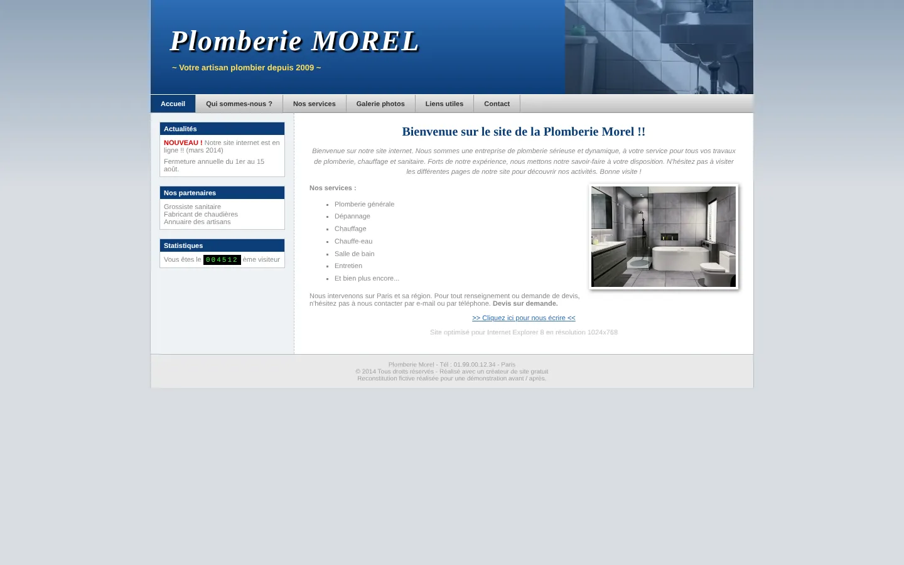
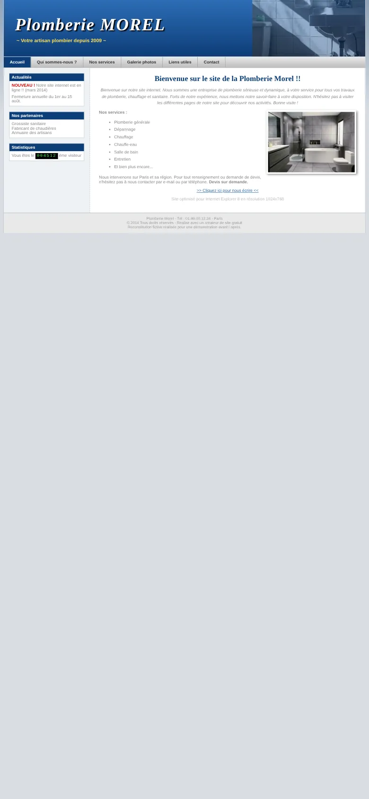
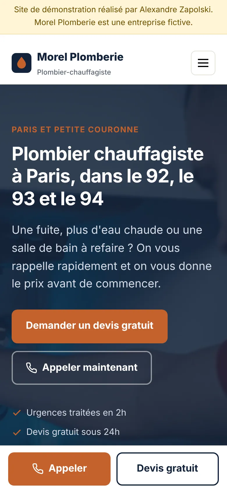

Plombier-chauffagiste · Paris et petite couronne

Morel Plomberie : avant / après
Beaucoup d'artisans ont un site créé il y a dix ans : illisible sur téléphone, numéro introuvable, aucun prix. Voici ce que je change pour qu'il fasse à nouveau sonner le téléphone.
Morel Plomberie est une entreprise fictive. La version « avant » est une reconstitution d'un site d'artisan typique des années 2010, pas l'ancien site d'un client réel.
Voir la version avant · Voir la version après en ligne
Sur ordinateur

Avant AprèsSur téléphone
C'est là que se joue l'essentiel : un client avec une fuite cherche un plombier sur son téléphone, pas sur un ordinateur.


Ce qui change, point par point
| Sujet | Avant | Après |
|---|---|---|
| Téléphone mobile | Page d'ordinateur rétrécie, il faut zoomer pour lire. | Mise en page pensée d'abord pour le téléphone. |
| Appeler | Numéro en petit dans le pied de page, non cliquable. | Bouton d'appel en haut de page et barre d'appel fixe sur mobile. |
| Message | « Bienvenue sur notre site », sans dire où ni pour quoi. | Le titre dit le métier et la zone : Paris, 92, 93, 94. |
| Prix | « Devis sur demande ». | Tarifs indicatifs par prestation, pour rassurer avant l'appel. |
| Demande de devis | Lien e-mail qui ouvre une messagerie, souvent non configurée. | Formulaire court qui vérifie la zone d'intervention dès le code postal. |
| Lisibilité | Texte de 11 px en gris clair : contraste de 3,5:1. | Texte de 17 px, contraste de 16,6:1 (minimum recommandé : 4,5:1). |
| Titre de page « Accueil », pas de description. | Titre et description par page, données structurées « plombier » pour la recherche locale. | |
| Confiance | Actualité de 2014, compteur de visites. | Avis clients, déroulé d'une intervention, engagements. |
| Obligations légales | Pas de mentions légales. | Page mentions légales et données personnelles (RGPD). |
Votre site a le même âge ?
Je regarde votre site actuel et je vous dis ce qui vaut la peine d'être corrigé.